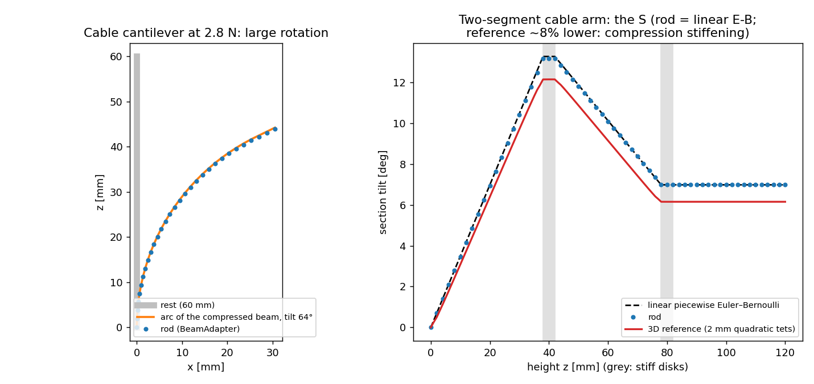

Rod backend: slender bodies as beams¶
--backend rod runs a scenario's slender soft body as a chain of beams on SOFA's
BeamAdapter (softsim/backends/rod/). Needs the SOFA install of
sofa.md; no GPU. The same YAML that runs on fem, mujoco and
sofa runs on rod, and softsim transfer can compare them:
softsim run scenarios/actuation/cable_arm.yaml --backend rod
Model¶
- Reduction (
reduce.py, pure numpy). The body must be a column along its z axis, clamped on its z-min face (fixed: [base]) and at least 4 times longer than wide. Frames sit on planes z = const, one per mesh layer. Per beam the tetrahedra of the slab give, with each element's own modulus (so material zones, layers and stiff disks enter exactly), the extensional stiffnessEA, the bending stiffnessesEI_x,EI_yabout the stiffness-weighted centroid (the neutral axis moves off the geometric centre in a layered section; the exact quadratic tetrahedron integrals are used) and the mass per length. - To BeamAdapter. Three stiffnesses meet three unknowns: a rectangle
lY = sqrt(12 EI_x / EA),lZ = sqrt(12 EI_y / EA)and a modulusE = EA / (lY lZ)per beam, plus a mass density that reproduces the mass per length. The beam axis is BeamAdapter's x, so the model runs in the cyclic frame(X, Y, Z) = (z, x, y)of the scene and maps back. - Mesh from frames. Every mesh vertex keeps its axial position and in-plane offset; its position is the interpolated frame (lerp the position, slerp the rotation) plus the rotated offset, so every region metric of the scenario works unchanged (bend angle, tip position, cable length).
- Loads. Cables and region forces call the same functions as the 3D backends
(
cable_forces,cable_length,region_force_weights) on the deformed vertices; the vertex forces reach the frames through the transpose of the vertex map (virtual work: framekgets(1 - t) fand the moment(1 - t) arm x f), explicitly once per step, as on SOFA's tets. Tension and stroke control both work.
What it is, and is not¶
Geometrically nonlinear (finite rotations of the frames), materially linear: each element counts with its small-strain modulus. Two consequences, both measured below:
- A beam bent to 64° follows the exact elastica-like arc (the cable's pure moment gives a circular
arc), with the beam shortened by its axial compression,
L / (1 + N / EA). - The 3D reference's Neo-Hookean tangent modulus rises under the cable's axial compression,
E_t = E (1 + 2N / EA)(the factor intests/test_cable_arm.py), which a linear rod cannot have: on the cable arm the rod bends about 8% more than the reference, and that is this factor (7.3% plus the reference's own 1.8% below Euler–Bernoulli), not an error of the rod.
Refused with a message: pressure actuators, ground and contact, rigid bodies, moving and rotating mounts, prescribed motion, Prony, zones with their own damping, more than one soft body, rotated bodies, bodies shorter than 4 widths, a free body (no clamped end).
Damping: Rayleigh beta only. The solver's mass-proportional alpha does nothing on BeamAdapter's mass
(measured: the late amplitude of a free vibration with alpha = 20 /s is that without damping, with
beta = 0.01 s it falls by 5x), so a card with alpha is refused. For a quasi-static run use beta
(damping: {model: rayleigh, beta: 0.3} on the body and on every zone).
Cable timestep. The explicit cable force is limited like on the 3D backends: the arm at 2 ms is refused by
the cable-unstable check; 1 ms runs, the arm's 0.1 ms default is 100 times slower.
Evidence (tests/test_rod_reduce.py, tests/test_rod_backend.py, 16 tests)¶
| Case | Rod | Reference value | Where |
|---|---|---|---|
| Tip load 5 mN, 10 x 10 x 60 mm | 0.8641 mm | Euler–Bernoulli 0.864 mm (3D reference 0.866 mm) | tip_load_cantilever.yaml |
| Cable cantilever, 0.7 N | 0.2777 rad | T d L / EI = 0.2772 rad |
cable_cantilever.yaml |
| Same at 2.8 N (64°) | tilt 1.116 rad; tip (30.6, 44.0) mm | arc of the compressed beam (30.7, 44.2) mm | figure, left |
| Layered section (neutral axis −2.57 mm) | 0.2233 rad | composite T (d - x_c) L / EI within 1% |
cable_cantilever_layered.yaml |
| Two-segment arm | 0.2298, 0.1221 rad | linear piecewise E–B 0.2315, 0.1219 rad (3D reference 0.2119, 0.1074: lower by 1 + 2N/EA and 1.8%) |
cable_arm.yaml, figure, right |

Reproduce the figure with python tools/plot_rod.py (about 2 min).
Mutation tests. Each of these deliberate bugs fails the tests (4, 5, 5, 5, 2 and 6 failures): zone stiffness ignored, the moment sign flipped, the moments dropped, nearest-frame instead of interpolation in the vertex map, EI_x and EI_y swapped, and the cable load dropped.
Speed. The rod runs the arm (1.5 s at 1 ms) in 5.8 s and each 10 mm cantilever in under 2 s on the CPU (500 ms at 2 ms); the MuJoCo arm run took 20 minutes (../actuation.md).